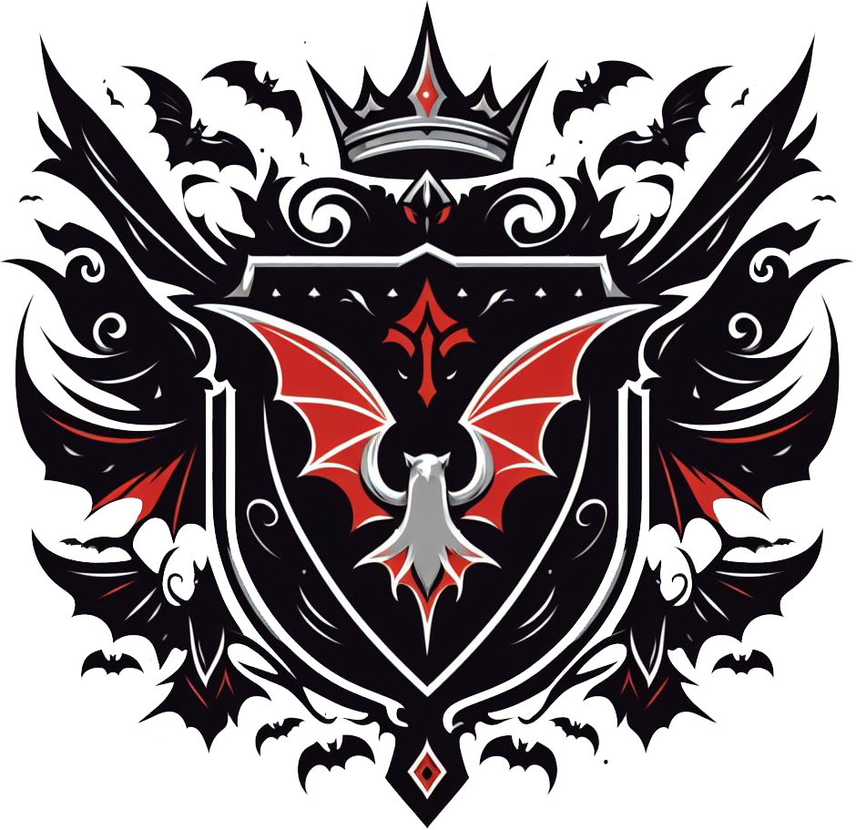

| Introduction |
|---|
Fae'Gir...In the aged pages of forgotten tomes, the tale of Fae'Gir is recounted, a name that whispers through the crevices of time. Since the dawn of written word, this name has endured, a mysterious echo resonating within the vast libraries safeguarding the histories of the realms. But from what hidden recess of creation did these intertwined letters originate? It remains an enigma, defying scholars' attempts to trace its roots. Thus, a popular belief emerged: Fae'Gir, the deity who descended upon the Empire, sowing the magical seed from which all else sprouted. Yet, the light attributed to Fae'Gir was tinged with relativity. In that realm, night held equal sway to day, and nocturnal beings intertwined with human destinies. Within that vast, eerie stage, the duality of existence unfolded like a tapestry of nightmares: light and darkness, life and death, order and chaos, an eternal dance written on blood-stained pages since time immemorial. Now, we're left with a world devoid of gods, ruled by greed, betrayal, and hardship. Every plain is a graveyard of nameless corpses, every forest a tomb of trees ready to consume those who dare enter. Here, survival demands a relentless struggle for belonging, where death lurks at every turn. |
| Factions |
|---|
Dark Zenith.

Zenith's Coat of Arms. Zenith is an empire built on blood and dark magic. It once ruled the vast majority of the continent, and though its reach has shrunk, its influence remains undeniable. Here, magic is not feared but revered: witchcraft, necromancy, and eldritch rites are written into the very fabric of society. Every creature, from the lowest gutter-born to the highest aristocrat, has a place in Zenith, so long as they can survive its nature. It is the last true refuge for those touched by magic, whether cursed or blessed, a land where mages, witches, and sorcerers of all kinds can practice their craft without fear of persecution. But sanctuary comes at a cost. Life in Zenith is brutal, its streets filled with the desperate and the damned, and only the cunning or the powerful carve a place for themselves amidst the ruin and revelry. At the heart of the empire lies Ebon Crown, a city submerged in endless night, its sky shrouded in sorcery. The high echelons of Zenith are formed by an aristocracy of ancient houses: vampires with insatiable appetites, warlocks with knowledge forbidden to the rest of the world, and humans who have long abandoned their mortality for power. Beneath them, the lower castes scrape by, feeding the ever-hungry machine of Zenith’s dominion. For centuries, the empire was governed by two sovereigns: one who in name spoke for the common races—humans, elves, and others—and another who ruled in the name of the nightborn. A balance of power, fragile yet absolute. But now, a third has risen. A new, unknown force has carved its place among them, forming what is now whispered as the Dark Triad. Their arrival has shattered the old order, and with them comes a vision far darker than before. Zenith does not seek peace. It does not seek prosperity. It seeks dominion. Its rulers dream of an eternal night, a world drowned in darkness where they alone hold the reins. That is their objective: to cast the world in eternal night, expanding the shroud that engulfs the capital to the entire continent. And as their influence spreads, as shadows creep beyond their borders, the world trembles—because Zenith is leading the way. The Dawnlands.
Lands' coat of arms. To the desperate, the Dawnlands is salvation. A bastion of resistance, a realm free from the horrors of Zenith, a promise of life untainted by magic. It was born from rebellion, forged in the fires of war, and sanctified by the light of Gideon, the first Alchemist, its sovereign ruler. Under his guidance, the Dawnlands rose as a counterforce to the sorcery and corruption that plagued the world. Yet, salvation has a cost. What began as a war against Zenith’s dominion has twisted into something more ruthless. Magic is not merely outlawed—it is hunted. Those born with it are cursed, condemned to the purging flames or stripped of their power through alchemical rituals. The clerics, knights, and paladins of the Golden Order wield their Light as both shield and sword, smiting magic wherever it festers. And where faith does not cleanse, fear prevails. Even those untouched by magic live in terror of false accusations, of whispers that could brand them heretic, sorcerer, abomination. The Dawnlands preach unity, but in truth, their ranks grow ever more divided by the day. Elves and humans dominate the higher echelons, while other races find themselves increasingly unwelcome. What was once a rebellion for freedom has become an empire of fanaticism, its purity maintained through steel and fire. At its heart stands Elysian City, the grand capital, shining at the farthest edge of the continent, a beacon of supposed hope. But its towering spires cast long shadows. The Light may burn bright, but it does not warm. And now, uncertainty looms. Gideon has not been seen in months. Rumors whisper of an ambush, a wound that bled something darker than mere blood. He is said to rule from the towering fortress of the Radiant Bastion, but his absence has stirred uncertainty. The Inquisition tightens its grip, the Golden Order grows ever more merciless, and the people, once hopeful, begin to understand a chilling truth: They merely traded one yoke for another. Northern Marches.
Marches' coat of arms. The Northern Marches have never been conquered. The land itself forbids it. A brutal expanse of frozen tundra and icy peaks, the North is as inhospitable as it is untamed. Its bitter cold, unyielding terrain, and savage storms make it near impossible to claim. But even worse than the land are the horrors that creep from beyond the Frozen Sea: eldritch creatures, plagues that rot flesh and mind, monstrosities that defy understanding. For centuries, the noble houses of the North have served as a shield against these nightmares, standing as an unbreakable wall between the abyss and the lands beyond. But the North is not merciful. It does not suffer the weak. Hunger is as much a killer as steel, and the cold takes those too old, too slow, or too sick to survive. Here, strength is not a privilege but a necessity. Those who cannot fight, who cannot endure, are swallowed by the endless winter, forgotten beneath the ice. And even among those who do survive, life is brutal. The great houses warred like rival clans, raiding and feuding. There was no single ruler, no one strong enough to forge them into one. Until House Vyrnaryn returned. Once thought lost, they had vanished twenty-five years ago into the frozen unknown, swallowed by the wastes beyond the northern sea. When they returned, they did so astride dragons. Fire and scale, ice and death, they bent the warring houses to their will, uniting the North beneath a single banner, not through treaties or alliances, but through raw, undeniable power. Now, King Halgrim the Stormbreaker and Milena, the Ice Queen, rule from their seat in Drakenhold. They have declared one purpose: to forge the North into an empire of its own, an unbreakable bastion against the darkness that reaches from the north. They care nothing for the squabbles of the South. The Dawnlands and the Dark Zenith can wage their wars, play their games, slaughter each other in the name of their causes. The North has no interest in their feuds. But should the South ever set its sights on them, should they think to march beyond their borders, they will find the North is no prize to be won. It is a storm. And it does not forgive. Free Kingdoms.
Symbol that represents the Free Kingdoms. The Free Kingdoms are not a nation. They have no ruler, no unified banner, no common cause. They are the last remnants of autonomy in the grim world that Fae´Gir is. Some are realms that have refused to bend the knee. Others are lawless havens, thriving in the absence of order. But they all share one truth: they belong to no one. Take Naos, an elven kingdom hidden across the sea. Centuries ago, its royal family fled the mainland, sealing themselves away to ensure the survival of their people. Time has turned them into something almost mythic, their island a realm of secrecy and seclusion, untouched by war, by politics, by anything beyond their own traditions. Then there is Black Bay, the city of sea dogs, a lawless expanse of docks, taverns, and rotting ships, all under the watchful eye of the self-proclaimed King of Pirates. Here, power belongs to those with the fastest blade, the sharpest mind, and the deepest pockets. Smugglers, mercenaries, and treasure hunters call this place home, sailing the treacherous waters to plunder and trade with whoever has coin to spend. And beyond, in the wild and ancient Woodlands, civilization holds no sway. The forests stretch endless, untamed, defying conquest. Among its creeping shadows and corners dwell druids, fae-born creatures, and things far older than any empire. Those who dare seek dominion over the land are swallowed whole. There are other places, other kingdoms that have yet to choose a side, or refuse to do so at all. Some are forgotten, some fiercely independent, yet most have already been swallowed by war and its conquest, or by death and oblivion. |